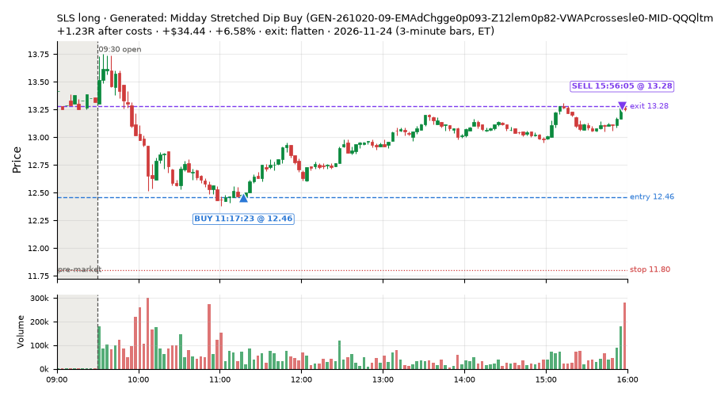
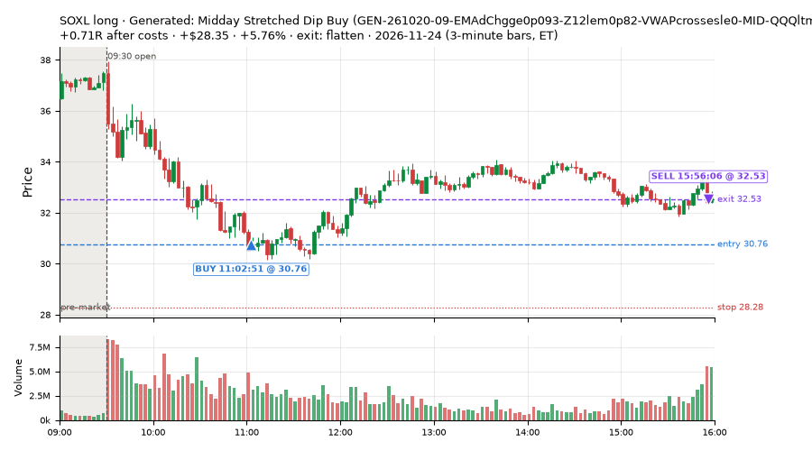
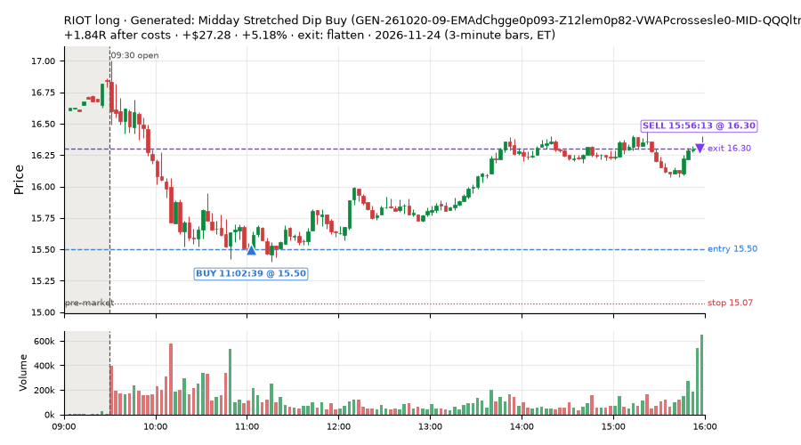
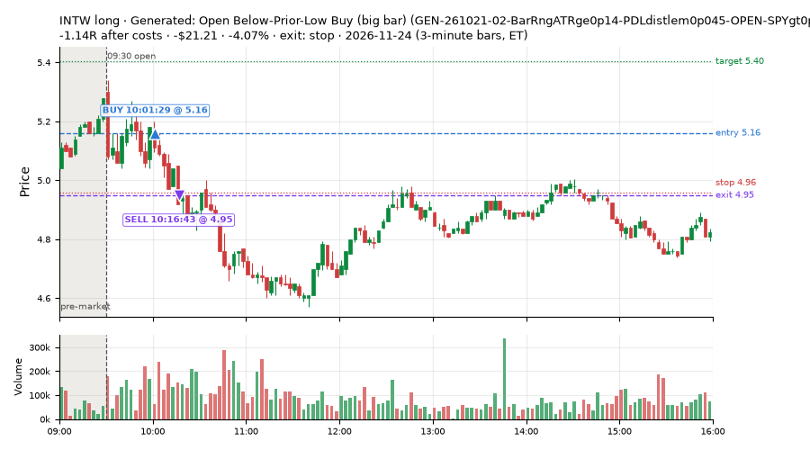
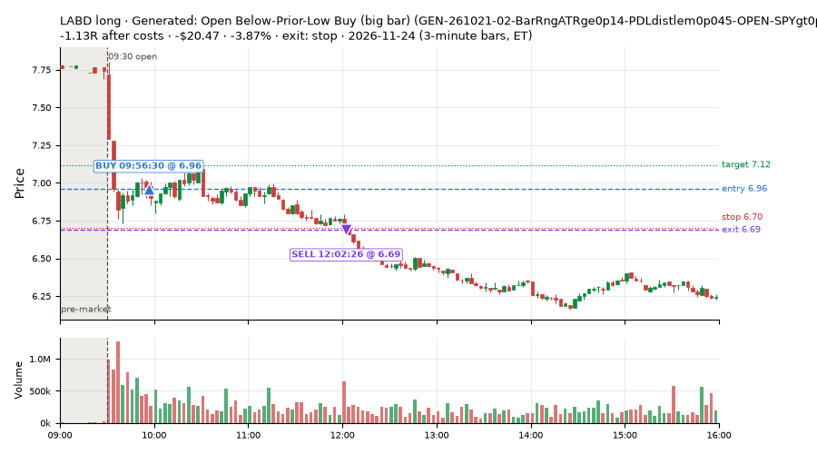
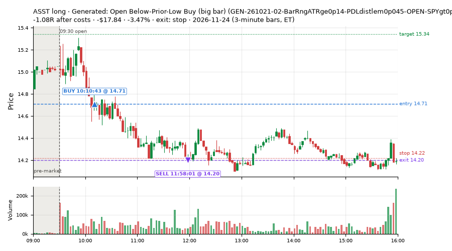
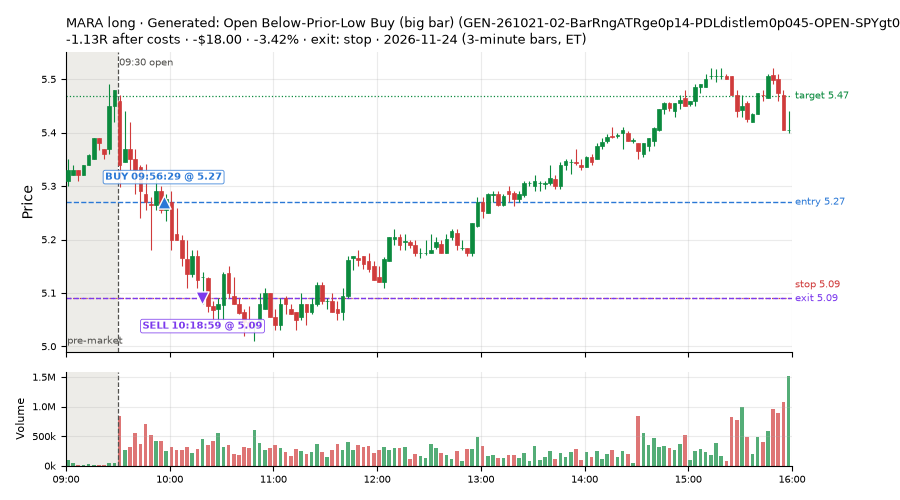
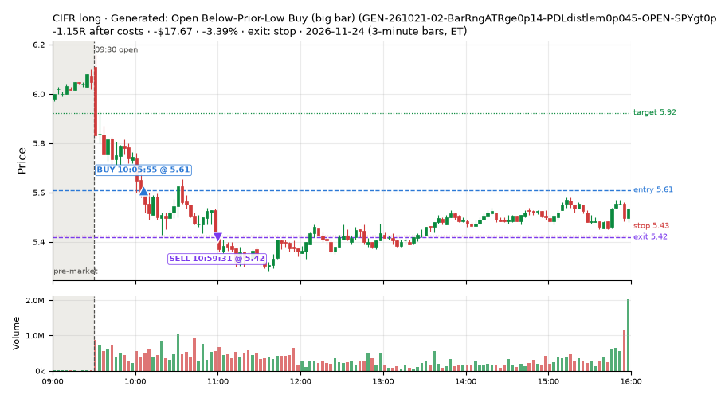

145 trades · win rate 51% · P/L $17.20
PROBATION: no live setup has passed both locked test periods. 10 owner-directed setups added 2026-10-08 (MarcoFlow top 5 + 5 new), untested live. RW6G1 (RW6 + VWAP band guard) added 2026-10-09, probation.

| Symbol | Setup | Side | In | Out | Entry | Exit | Exit reason | % gained | P/L |
|---|---|---|---|---|---|---|---|---|---|
| SLS | Generated: Midday Stretched Dip Buy (GEN-261020-09-EMAdChgge0p093-Z12lem0p82-VWAPcrossesle0-MID-QQQltm0p3-holdtr-long) | long | 11:17 | 15:56 | 12.46 | 13.28 | flatten | +6.58% | $34.44 |
| SOXL | Generated: Midday Stretched Dip Buy (GEN-261020-09-EMAdChgge0p093-Z12lem0p82-VWAPcrossesle0-MID-QQQltm0p3-holdtr-long) | long | 11:02 | 15:56 | 30.76 | 32.53 | flatten | +5.76% | $28.35 |
| RIOT | Generated: Midday Stretched Dip Buy (GEN-261020-09-EMAdChgge0p093-Z12lem0p82-VWAPcrossesle0-MID-QQQltm0p3-holdtr-long) | long | 11:02 | 15:56 | 15.50 | 16.30 | flatten | +5.18% | $27.28 |
| Symbol | Setup | Side | In | Out | Entry | Exit | Exit reason | % lost | P/L |
|---|---|---|---|---|---|---|---|---|---|
| INTW | GEN-261021-02-BarRngATRge0p14-PDLdistlem0p045-OPEN-SPYgt0p5-t1s1-long | long | 10:01 | 10:16 | 5.16 | 4.95 | stop | -4.07% | $-21.21 |
| LABD | GEN-261021-02-BarRngATRge0p14-PDLdistlem0p045-OPEN-SPYgt0p5-t1s1-long | long | 09:56 | 12:02 | 6.96 | 6.69 | stop | -3.87% | $-20.47 |
| ASST | GEN-261021-02-BarRngATRge0p14-PDLdistlem0p045-OPEN-SPYgt0p5-t1s1-long | long | 10:10 | 11:58 | 14.71 | 14.20 | stop | -3.47% | $-17.84 |
| MARA | GEN-261021-02-BarRngATRge0p14-PDLdistlem0p045-OPEN-SPYgt0p5-t1s1-long | long | 09:56 | 10:18 | 5.27 | 5.09 | stop | -3.42% | $-18.00 |
| CIFR | GEN-261021-02-BarRngATRge0p14-PDLdistlem0p045-OPEN-SPYgt0p5-t1s1-long | long | 10:05 | 10:59 | 5.61 | 5.42 | stop | -3.39% | $-17.67 |








Signal to fill: median 1s, 90th percentile 3s (145 trades). Bars close each minute; the order follows the bar close.
Best excursion (MFE): median 0.73R; worst (MAE) median 0.72R. 24% of trades never got +0.25R in our favour; 1 reached +1R and still closed at or below 0.
| Symbol | Setup | Best R | Worst R | Closed R |
|---|---|---|---|---|
| BRO | GEN-261021-04-NewHOD-PDHdistlem0p65-LAM-QQQltm0p6-hold-short | +0.88 | -1.12 | -1.14 |
| MRSH | GEN-261021-04-NewHOD-PDHdistlem0p65-LAM-QQQltm0p6-hold-short | +0.58 | -1.14 | -1.41 |
| VALE | GEN-261021-02-BarRngATRge0p14-PDLdistlem0p045-OPEN-SPYgt0p5-t1s1-long | +0.37 | -1.23 | -1.49 |
| CDNS | GEN-261021-02-BarRngATRge0p14-PDLdistlem0p045-OPEN-SPYgt0p5-t1s1-long | +0.70 | -1.05 | -1.13 |
| CLF | GEN-261021-02-BarRngATRge0p14-PDLdistlem0p045-OPEN-SPYgt0p5-t1s1-long | +0.57 | -1.07 | -1.22 |
| Entry time | Trades | Win | Avg R | P/L |
|---|---|---|---|---|
| 09:50-10:30 | 44 | 5% | -1.02 | $-386.50 |
| 10:30-11:30 | 93 | 72% | +0.33 | $383.00 |
| 11:30-13:00 | 8 | 62% | +0.14 | $20.70 |
| Setup | Trades | Win | Avg R after costs | Adj R (net of SPY) | Avg R ex-market (all sessions) | P/L |
|---|---|---|---|---|---|---|
| Generated: Midday Divergence Short (SPY up) (GEN-261020-04-MACDhge0p12-BullDiv-MID-SPYgt0p25-t05s1-short) | 2.0 | 50% | -0.36 | -0.42 | -0.03 (beta -0.64, n 9) | $-2.66 |
| Generated: Midday Stretched Dip Buy (GEN-261020-09-EMAdChgge0p093-Z12lem0p82-VWAPcrossesle0-MID-QQQltm0p3-holdtr-long) | 41.0 | 93% | +0.62 | +0.38 | +0.24 (beta +0.85, n 257) | $373.41 |
| Generated: Morning Failed-Breakdown Short (GEN-261020-10-BBpctge0p81-ORBfailDn-AM-BRvwlt0p3-hold-short) | 6.0 | 100% | +1.69 | +2.48 | -0.18 (beta -0.48, n 158) | $38.80 |
| Generated: Open Below-Prior-Low Buy (big bar) (GEN-261021-02-BarRngATRge0p14-PDLdistlem0p045-OPEN-SPYgt0p5-t1s1-long) | 44.0 | 5% | -1.02 | -0.75 | +0.15 (beta +1.44, n 287) | $-386.50 |
| Generated: Late-AM New-High Short (QQQ down) (GEN-261021-04-NewHOD-PDHdistlem0p65-LAM-QQQltm0p6-hold-short) | 52.0 | 52% | -0.05 | +0.66 | +0.24 (beta -0.64, n 73) | $-5.85 |
Market direction (SPY, beta 1) accounted for $-103.75 of today's $17.20; the rest ($120.95) came from the setups themselves. Avg R net of SPY: +0.21 (incl. a hedge leg's cost; report only).
11 setups live today. Today: 332 signals, 145 taken, 0 lost because another setup held the symbol (0%). Since 2026-10-19 (27 sessions): 10321 signals, 4420 taken, 283 lost to other setups (3%). Peak open positions today 100 of 300 slots. Earnings blackout removed 124 symbols before scanning.
Simulated playing time (not live): 5876 what-if trades of signals not taken, avg -0.12R, 44% winners; of them 283 lost to another setup (avg -0.04R).
Silent: GEN-261021-08-RSI2le0-Ret15mATRge0p16-ATRdge3p6-LUNCH-QQQgt0p6-holdtr-long, GEN-POD1022-01-thrasher-breadth-thrust-stocks-holdtr-long
| Prio | Setup | Today sig / taken | Sessions | Signals / taken / trades | Taken/day | Expected/day | Lost to other setups | Lost to (setup n) | Top skip reasons | SIMULATED: not-taken n / avg R / win | Verdict |
|---|---|---|---|---|---|---|---|---|---|---|---|
| 1 | Generated: Late-AM New-High Short (QQQ down) GEN-261021-04-NewHOD-PDHdistlem0p65-LAM-QQQltm0p6-hold-short | 62 / 52 | 25 | 108 / 73 / 73 | 2.92 | – | 0 | – | spread / quote / size 20, not shortable / shorts off 14, broker rejected 1 | 35 / +0.61R / 49% | slow 14.6 entries/week; ~4 weeks to 60 trades |
| 2 | Generated: Midday Divergence Short (SPY up) GEN-261020-04-MACDhge0p12-BullDiv-MID-SPYgt0p25-t05s1-short | 5 / 2 | 26 | 84 / 9 / 9 | 0.35 | – | 1 | GEN-261028-05-EMAdChgge0p093-ORLdistlem0p42-LAM-QQQgt0p6-holdtr-long 1 | not shortable / shorts off 48, daily loss cap 20, spread / quote / size 4 | 75 / +0.06R / 72% | slow 1.7 entries/week; ~35 weeks to 60 trades |
| 3 | Generated: Morning RSI Drop Buy (strong mkt) GEN-261021-09-RSIslopelem19-ORHdistlem0p73-AM-BRvwgt0p7-t1s1-long | 0 / 0 | 25 | 22 / 11 / 11 | 0.44 | – | 2 | GEN-261023-03-RSI5le13-VWAPatrlem0p34-OPEN-BRvwgt0p6-holdtr-short 1, GEN-261026-05-Ret15mATRge0p042-FromPCATRge0p28-ORHdistlem0p38-OPEN-BRopgt0p5-hold-short 1, GEN-261029-08-Ret15mlem0p36-Flow3lem0p54-RSI14ge65-AM-SPYgt0p5-hold-short 1 | spread / quote / size 6, broker rejected 3, symbol held by another setup 2 | 11 / +0.67R / 91% | slow 2.2 entries/week; ~27 weeks to 60 trades |
| 4 | Podcast: Breadth Thrust, Index ETFs (observation) GEN-POD1022-02-breadth-thrust-index-etf-holdtr-long | 0 / 0 | 22 | 4 / 2 / 2 | 0.09 | – | 0 | – | spread / quote / size 2 | 2 / -1.02R / 0% | slow 0.5 entries/week; ~132 weeks to 60 trades |
| 5 | Generated: Late-AM Pop Fade (SPY down) GEN-261023-06-RSI7le38-Ret15mge0p54-EMAdiffge0p29-LAM-SPYltm0p25-t1s05-short | 0 / 0 | 23 | 70 / 31 / 31 | 1.35 | – | 2 | GEN-261022-01-ORBfailUp-ATRdge7p9-Eff6ge0p55-AM-SPYdn-hold-long 2 | not shortable / shorts off 18, spread / quote / size 18, symbol held by another setup 2 | 39 / -0.54R / 23% | slow 6.7 entries/week; ~9 weeks to 60 trades |
| 6 | Podcast: Bull Flag Breakout or Bailout (observation) GEN-POD1022-03-wt-bull-flag-bailout-S-long | 1 / 0 | 22 | 9 / 3 / 3 | 0.14 | – | 0 | – | spread / quote / size 4, other 2 | 6 / +0.26R / 83% | slow 0.7 entries/week; ~88 weeks to 60 trades |
| 7 | Generated: Midday Oversold Buy (RSI < 22) GEN-261019-04-EMAdChgge0p15-RSI14le22-MID-BRoplt0p5-t1s1-long | 0 / 0 | 27 | 444 / 231 / 231 | 8.56 | – | 7 | GEN-261022-09-Ret15mATRlem0p16-BarRngATRge0p11-ADX7ge64-AM-BRvwlt0p3-hold-short 7 | spread / quote / size 128, daily loss cap 41, broker rejected 22 | 212 / -0.01R / 49% | ok 42.8 entries/week |
| 8 | Generated: Morning Failed-Breakdown Short GEN-261020-10-BBpctge0p81-ORBfailDn-AM-BRvwlt0p3-hold-short | 26 / 6 | 26 | 452 / 158 / 158 | 6.08 | – | 0 | – | per-setup cap 120, not shortable / shorts off 92, spread / quote / size 76 | 294 / -0.35R / 30% | ok 30.4 entries/week |
| 9 | Generated: Midday Stretched Dip Buy GEN-261020-09-EMAdChgge0p093-Z12lem0p82-VWAPcrossesle0-MID-QQQltm0p3-holdtr-long | 73 / 41 | 26 | 367 / 257 / 257 | 9.88 | – | 16 | GEN-261022-09-Ret15mATRlem0p16-BarRngATRge0p11-ADX7ge64-AM-BRvwlt0p3-hold-short 16 | spread / quote / size 77, symbol held by another setup 16, other 16 | 110 / +0.53R / 72% | ok 49.4 entries/week |
| 10 | Generated: Open Below-Prior-Low Buy (big bar) GEN-261021-02-BarRngATRge0p14-PDLdistlem0p045-OPEN-SPYgt0p5-t1s1-long | 165 / 44 | 23 | 740 / 287 / 287 | 12.48 | – | 7 | GEN-261023-03-RSI5le13-VWAPatrlem0p34-OPEN-BRvwgt0p6-holdtr-short 5, GEN-261027-07-RSI14le35-FromOpenge2-AM-BRvwlt0p5-t1s1-short 1, GEN-261029-09-RangeExpge1p6-Since950ATRlem0p43-OPEN-BRvwgt0p5-hold-short 1 | spread / quote / size 202, per-setup cap 161, other 80 | 453 / -0.06R / 51% | ok 62.4 entries/week |
| 11 | Generated: Late-AM Failed-Breakout Buy GEN-261029-01-ORBfailUp-RSI14le41-ADX7le29-LAM-QQQgt0p3-hold-long | 0 / 0 | 19 | 387 / 121 / 121 | 6.37 | – | 6 | GEN-261029-08-Ret15mlem0p36-Flow3lem0p54-RSI14ge65-AM-SPYgt0p5-hold-short 3, GEN-261022-08-EMAdChglem0p094-Flow3ge1-RVolDayle0p59-AM-SPYgt0p25-holdtr-short 2, GEN-261022-07-Z12lem1p9-FlowShiftlem0p96-ATRdge3p6-AM-BRopgt0p5-t1s1-short 1 | broker rejected 137, daily loss cap 75, spread / quote / size 48 | 266 / -0.21R / 40% | ok 31.8 entries/week |
Every trade is attached as a CSV you can open and edit in Excel or Google Sheets. Live page: https://misiti15.github.io/MCF/live/